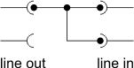

Analyze: Calibration
△ Index ▷ Usage ▷ Examples ▷ Parameters ▼ Calibration ▷ File
format ▷ How it works
▾ Overview ▾ Gain correction ▾ Matrix
correction
Overview
Calibration can significantly improve the accuracy of the measurements. Analyze supports 3 levels of calibration:
- One point calibration
This method only compensates for differences of the left and right channel of the sound device. In most cases that adds
no much value since most sound devices have no significant differences here. Therefore this method is not recommended
unless you want to compensate for additional external components.
- Two point matrix calibration
This calibration compensates for cross talk. While cross talk is no serious issue in most sound devices it
might be considerably in measurement setups. If your setup has a stable reference signal, i.e. independent of the
measurement sample load and you do not use a 4 point probe, than this kind of calibration is usually sufficient. This
applies typically to two port measurements of transfer functions with an very low output impedance amplifier as
source, e.g. an audio amplifier.
- Three point matrix calibration
This compensates for all relevant linear deviations of the measurement setup. Strictly speaking there is a
forth degree of freedom in the matrix, but since absolute amplitudes do not count in all supported measurement modes there
is no need for a full calibration.
Three point calibration is recommended for impedance measurements with 4 point probes.
All kinds of calibrations are frequency dependent and complex, i.e. compensate for amplitude and phase of each
frequency.
General rules
- It is essential that the sampling rate of the DAC exactly matches that of the ADC, i.e they have to use the
same clock oscillator. This requirement is usually fulfilled if and only if both are on the same sound device.
- The sampling rate used for calibration should match the sampling rate used for measurements. While it is possible
to measure at lower sampling rates adaptive aliasing filters of the sound device might impact the result.
- The FFT size need not to match. Since the coefficients of the correction matrix show only moderate frequency
dependency it is just fine to use a smaller FFT size for calibration to reduce noise.
Gain correction
The simple gain calibration mode only takes care of the differences in the transfer function between the two input
channels. This is sufficient to compensate for tolerances and phase differences between the channels. This is particularly
important in differential mode.
Note that the gain calibration does not compensate for the absolute transfer function of the sound device in any way. It does
not even distinguish between the transfer function of the line output stage and the transfer function of the line input.
 How to do gain calibration
Connect both line in channels to one line out channel. Play a white noise and activate the gain correction mode with option gg.
Result

Example of gain correction: Terratec XLerate (Aureal AU8820 chip) at 48kHz and an FFT length of 65536 samples, average over 10
cycles.
The deviation in the amplitude is with < 0,2 dB pretty good, but the channels are obviously not sampled
simultaneously. The time difference of ½ sample at the Nyquist frequency point to a serial conversion with two way
oversampling.
The result of the gain calibration is the complex and frequency dependent quotient:
The magnitude of this quotient is a measure of the degree of gain difference between the two channels. A typical value is
mainly independent of the frequency and close to but not exactly one. This is due to tolerances in resistors. At low
frequencies the difference may increase due to tolerances in the coupling capacitors.
The phase angle of the correction shows the synchronization of the channels. Beyond the small differences due to tolerance of
the coupling capacitors there are usually no particular deviations. But some sound devices sample the two channels not
simultaneously but alternating. In this case there is a linear phase shift.
Using the correction
When using the correction is used with option gr it is applied to both channels
symmetrically.
Do not use this correction to compensate for a complex transition function or there will be an impact on automatic weight
function.
Matrix correction
The simple gain calibration method above does not compensate for cross talk. So there is a superior calibration method called
matrix calibration. It should be preferred at least for impedance measurements.
Using
and
(L = channel 1, R = channel 2) the real impedance is:
But in fact you can't see Lideal and Rideal. What you really record is Lreal
and Rreal, a transformation:
Of course, all the coefficients cxx are complex and frequency dependent.
Using the matrix correction
The matrix correction is applied to the measurement data with option zr. This
calculates the inverse transformation matrix and applies it to the input data before the data is passed to the FFT analysis.
The sampling rate and the FFT size of the matrix correction data do not need to match the values of the current measurement.
A linear interpolation is used in doubt. But it is recommended to match the sampling rate matches because sound devices tend
to have sampling rate dependent filtering and the interpolation is very simple.
2 point matrix calibration
The easiest way to get the calibration coefficients is a two point calibration. This mode is activated by the zg
zn options.
It basically does
- one measurement with Lideal = 0 and
- one measurement with Rideal = 0.
This is, of course, not sufficient to get four coefficients. So further assumptions are needed. The main
assumption is that the sum of Lreal + Rreal is the same for both calibration
measurements, i.e. the reference is the same.
While this is typically a good assumption for two port measurements it might be a bad one for impedance measurements due to
wire inductance.
Calibration setup

Schematic how to prepare for matrix calibration of measurements of transfer functions.
The first calibration is done with the reference signal only connected to channel 2 (R) and channel 1 (L)
grounded. The second calibration is done the other way around.
If you use additional preamplifiers you should put the ground to their input instead of the sound devices input to compensate
for their properties as well.
Calibration sequence
When the matrix calibration is initiated with option zg, analyze takes the following steps in
sequence:
- Discard the first samples. (option psa)
- Record n cycles (option ln) of data.
- Output a message to setup for the next step to stderr.
- Discard some cycles. (option lp)
In this time you have to change the setup for step two.
- Record another n cycles.
- Write the result file (option zg) and terminate.
Important notes
It is essential to use absolutely the same reference signal in both steps. The reference therefore must be exactly
reproducible. So it cannot be done with white noise but must by cyclic. This implies to use the same output channel of the
sound device, too. It is also essential the the phase of the reference signal is 100% correlated in both steps. This
is the reason why both measurements have to be done at one single run without closing the sound device in between. The
synchronization of the input (ADC) and the output (DAC) have to be stable within less than one sample over the whole
measurement. This is only possible if both are controlled by the same crystal oscillator. Fortunately this is naturally
ensured as long as both ports are on the same sound device.
Result
In theory the matrix correction omits all linear errors without the need of an absolute reference. Practically this only
works for the correction of sound device itself. For impedance measurements there is one degree of freedom to much. You know
neither Rideal at Z = 0 nor Lideal at Z = ∞
and they are not necessarily the same. You could eliminate the additional degree of freedom if you assume that Uref ∝ Lideal + Rideal
=> Rideal at Z = 0 equals Lideal at Z = ∞
(see option zn). But this introduces the systematic error that the high current at Z = 0
causes an additional voltage drop at inductance of the wires.
3 Point matrix calibration
Three point calibration is primarily intended for impedance measurements, but it may be used for two port measurements as
well. It will use a third calibration measurement with a known impedance (or a known transfer function respectively). This
compensates for all linear deviations.
Calibration sequence
When the 3 point matrix calibration is initiated with option zg, analyze takes the following
steps in sequence:
- Discard the first samples. (option psa)
- Record n cycles (option ln) of data for the reference impedance, Z
= 1 by default.
- Output a message to setup for the next step to stderr.
- Discard some cycles. (option lp)
In this time you have to change the setup for step two.
- Record another n cycles for impedance Z = 0.
- Output a message to setup for the next step to stderr.
- Discard some cycles. (option lp)
In this time you have to change the setup for step three.
- Record the last n cycles for impedance Z = ∞.
- Write the result file (option zg) and terminate.
 Example of matrix calibration result: on board Realtek ALC650 codec at 48 kHz sampling rate and a
Example of matrix calibration result: on board Realtek ALC650 codec at 48 kHz sampling rate and a